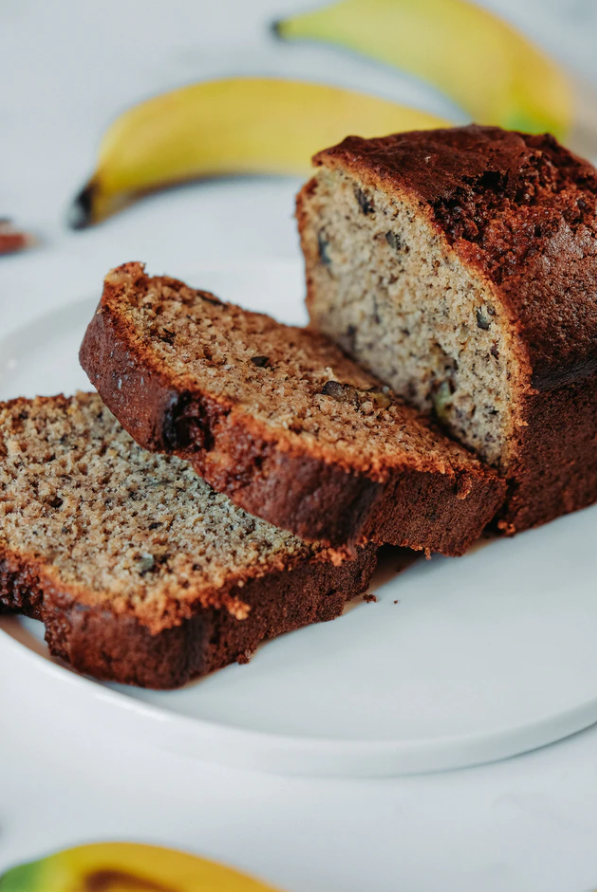

Muzlu Kek Tarifi
İsim Soyisim
"Çok pratik, denemenizi tavsiye ederim"
Malzemeler
Kabartma Tozu
Vanilin
Şeker
Yumurta
Tuz
Un
Muz
Hazırlanışı
- Fırınınızı önceden 350°F’de ısıtın. 4x8-inch boyutlarında bir kek kalıbını tereyağı ile yağlayın.
- Muzları soyup karıştırma kabına aktarın ve tamamen pürüzsüz olana kadar bir çatalla ezin. Kabartma tozunu ve tuzu bir kapta karıştırın. Üzerine şekeri, çırpılmış yumurtayı ve vanilya özütünü ekleyin.
- Unu'da ekleyerek karıştırın. Hamuru hazırladığınız kek kalıbına dökün. Ortasına batırdığınız bir kürdan kuru çıkana kadar 350°F’de 50 - 60 dakika boyunca pişirin.
- Keki fırından alıp kalıbının içinde birkaç dakika boyunca soğumaya bırakın. Kalıbı ters çevirip keki çıkartın ve servis tabağına aktarın ve servis yapmadan önce tamamen soğumasını bekleyin.